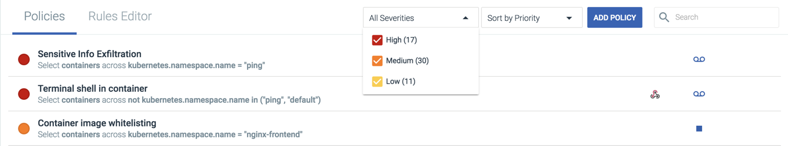
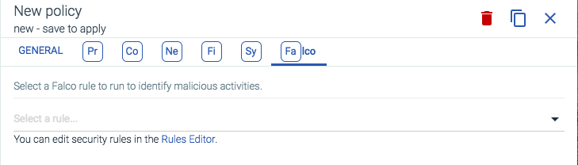

Policies
The Policies module displays a comprehensive list of all policies defined for the Sysdig Secure environment. Policies are a collection of rules that define the boundaries of expected behavior for the environment, and set in place actions to be taken should behavior outside those boundaries occurs. Through this module, policies, and the underlying rules that define them, can be added, edited, or removed.
Rules can be defined to whitelist or blacklist specific commands and processes, container images, network connections, read/write permissions, and system calls. In addition, advanced/custom rules can be written, using the Falco rules syntax. Falco is a behavioral activity monitoring tool, designed to detect abnormal behavior in applications and containers.
For more information about Falco, refer to the Falco documentation.
Contents
Update the Default Falco Rules (On-Premises Environments Only)
Navigate the Policies Module
The Policies Tab
The Policies tab displays the list of currently configured policies. These policies are listed in order of priority, and policies are validated in priority order, from top to bottom, until a terminating action (for example, a syscall is blacklisted, or a container is stopped) occurs.
Note
The default priority is oldest → newest policy, based on date of creation. Policy priority can be configured in the Edit Policy panel.
 |
The main policy list displays the following information:
Policy Information | Description |
|---|---|
Severity | The configured severity of the policy. The severity reflects the risk and impact to the entities impacted if the policy is triggered:
|
Policy Name | The name of the policy. |
Scope | The entities impacted by the policy. |
Notification Channels | The types of notification channels configured for the policy. This is represented by one or more notification channel related icons. |
Actions | The actions the policy should trigger. This is represented by a Stop or Pause icon, or left blank. |
Captures | Whether a capture file should be created. This is represented by the Captures (recording tape) icon. |
Selecting a policy from the list opens a side panel, where the policy can be reviewed in detail, and configured if necessary. For more information, and examples, refer to the Configure Policies section below.
Configure the Policies List
The policy list can be filtered and sorted to better show the policies users need to review.
To filter the policies list:
From the
Policiesmodule, open theSeveritydrop-down list: Check/uncheck the relevant severity types. The example below only displays
Lowseverity policies:
To sort the policies list:
From the
Policiesmodule, open theSort Bydrop-down list:
Select the preferred way to group/sort the policies. The example below groups the policies by severity:

The Rules Editor Tab
The Rules Editor tab displays the default and custom Falco rules currently configured for the environment.
 |
Note
The Default Rules panel is read-only for SaaS customers, and updated with each release. On-premises customers need to update the default rules manually. For more information, refer to the Advanced Rules section.
For more information on writing Falco rules, refer to the Falco Rules documentation.
Configure Policies
The creating/editing policies process can be broken into two main parts: defining the general properties of the policy (for example, the scope and notification channels), and defining the rules that form the policy framework.
Note
New Falco rules must be written before they can be added to a new/edited policy. For more information on creating rules with Sysdig Falco, refer to the Falco Rules documentation.
Note
Notification channels must be created before they can be added to a new/edited policy. For more information on configuring notification channels, refer to the Notifications Management documentation.
Create a Policy
To create a new policy:
Note
Steps three → eight in the following process are optional, as a policy does not require every type of rule to be configured. However, at least one rule type must be configured for the policy to be created.
From the
Policiesmodule, click theAdd Policybutton.Configure the policy's general properties:

Define a meaningful policy name.
Optional: Define an accurate policy description to increase user accessibility.
Set the policy severity to
High(red),Medium(orange), orLow(Yellow)Note
Policy severity is subjective, and is used to group policies within a Sysdig Secure instance.
Toggle the
Enabledswitch as necessary.Define the policy priority within the infrastructure.
Warning
Policy priority is critical to the policy workflow. Sysdig recommends reviewing policy priorities whenever a new policy is created, to ensure policies are triggered in the correct order.
Define the policy scope within the infrastructure, and whether the policy applies to hosts and/or containers.
Define the actions that should occur when the policy is triggered:
Set the container action to
Nothing(no change will occur, but a event notification will be sent),Stop(the container will be killed), orPause(the container will be paused for review).Optional: Check the Captures checkbox to enable capture creation, and define the time before and after the event the capture file should record.
Note
For more information about capture files, refer to the Captures documentation.
Add the notification channels the policy should use if triggered.
Note
For more information on configuring notification channels, refer to the Notifications Management documentation.
Optional: Navigate to the
Processestab:
Warning
Process names must match exactly. Wildcards and partial matches are not supported.
Define a comma-separated list of processes to whitelist.
Define a comma-separated list of processes to blacklist.
Select either
Evaluate next policy,Whitelist, orBlacklist, for all processes not explicitly listed in steps a and b.
Optional: Navigate to the
Containerstab:
Note
Container image names can be expressed in the following formats:
namename:tagname:tag@digesthost:port/name:tag@digesthost/name:tag@digest
Note
Wildcards and partial matches are not supported. For example, the string
myscannot be used to match allmysqlcontainers. However, the stringmysqlwill match bothmysql:latestandmysql:1.2.4.Define a comma-separated list of container images to whitelist.
Define a comma-separated list of container images to blacklist.
Select either
Evaluate next policy,Whitelist, orBlacklist, for all container images not explicitly listed in steps a and b.
Optional: Navigate to the
Networktab:Note
Sysdig only considers listening ports for policy configuration. Port matching is only done once, when the listen occurs, and not for any additional activity.
Define whether inbound/outbound connections can be initiated within the configured scope.
Define the TCP ports that can be/cannot be used for listening.
Define the UDP ports that can be/cannot be used for listening.
Select either
Evaluate next policy,Whitelist, orBlacklist, for all container images not explicitly listed in steps b and c.
Optional: Navigate to the
File Systemtab:Note
Policy violations for file system rules are evaluated when common system calls for file/directory opening, creation, renaming, and removing are successfully executed.
The following system calls are currently supported:
open/openatmkdir/mkdiratrmdirrename/renameatunlink/unlinkat
Define the read/write operations that should be whitelisted/blacklisted for the configured scope.
Define the read only operations that should be whitelisted/blacklisted for the configured scope.
Select either
Evaluate next policy,Whitelist, orBlacklist, for all operations not defined in steps a and b.
Optional: Navigate to the
Syscallstab:Warning
System call names must match exactly. Wildcards and partial matches are not supported.
Define a comma-separated list of system calls to whitelist.
Define a comma-separated list of system calls to blacklist.
Select either
Evaluate next policy,Whitelist, orBlacklist, for all system calls not explicitly listed in steps a and b.
Optional: Navigate to the
Falcotab: Open the
Falco Rulesdrop-down list.Select the Falco rule for the policy to use.
Note
New Falco rules must be written before they can be added to a new/edited policy. For more information on creating rules with Sysdig Falco, refer to the Falco Rules documentation.
Optional: Repeat steps one → eight to create additional policies before saving.
Click the
Apply Changesbutton to save the changes, or theDiscard / Discard Allbutton to revert all changes.
Edit Existing Policies
To edit an existing policy:
From the
Policiesmodule, select the relevant policy.Edit the policy as necessary.
Optional: Repeat steps one and two for each additional policy that needs to be edited.
Click the
Apply Changesbutton to save the changes, or theDiscard / Discard Allbutton to revert all changes.
Duplicate an Existing Policy
Policies can be duplicated to speed up the policy creation process. This is useful when multiple policies have similar scopes, rules, or other configuration options. To duplicate an existing policy:
From the
Policiesmodule, select the relevant policy.Click the
Copy Policy(pages) icon, either in the Policies list, or in theEdit Policywindow:Edit the new policy.
Optional: Repeat steps one, two, and three for each additional policy that needs to be duplicated.
Click the
Apply Changesbutton to save the changes, or theDiscard / Discard Allbutton to revert all changes.
Delete Existing Policies
Policies can be deleted via the Edit Policy window. To delete a policy/multiple policies:
From the
Policiesmodule, select the relevant policy.Click the
Delete(trash can) icon in theEdit Policywindow:Optional: Repeat steps one and two to tag multiple policies for deletion:

Click the
Apply Changesbutton to save the changes, theRevert(left arrow) icon to revert the changes to a single policy, or theDiscard / Discard Allbutton to revert all changes:
Advanced Rules
In Sysdig Secure, advanced/complex rules can be created for policies using the Falco Rules Engine. Sysdig provides a number of default Falco rules already configured. These rules can be modified or overwritten, allowing for the creation of detailed policies.
Note
For more information on writing Falco rules, refer to the Falco Rules documentation.
Update the Default Falco Rules (On-Premises Environments Only)
New Falco rules are regularly added to the default Falco rules list by the Sysdig Engineering Team. On-premises environments need to be updated manually to add the new rules.
Note
The Default Rules panel is read-only for SaaS customers, and updated with each release.
To update the default Falco rules:
In a web browser, navigate to https://raw.githubusercontent.com/draios/falco/dev/rules/falco_rules.yaml.
Copy the Falco Rules file content.
In a web browser, navigate to https://secure.sysdig.com.
Open the
Policiesmodule.Navigate to the
Rules Editortab.Replace the default rules with the latest version, and click the
Savebutton.Note
Updating the default rules will not override existing custom rules.